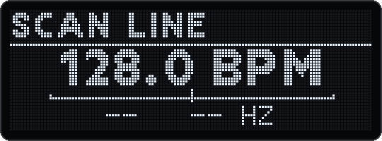
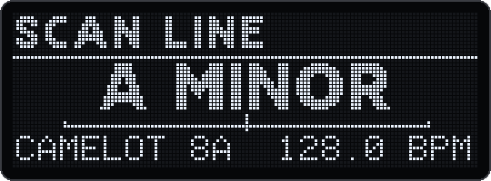
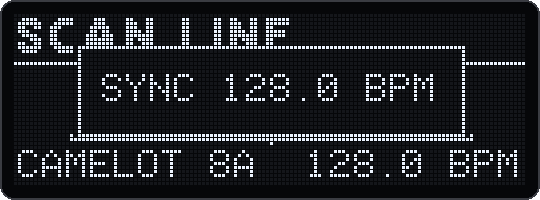
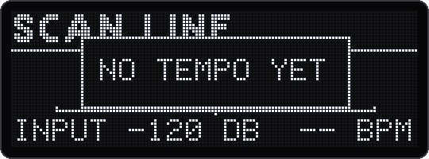
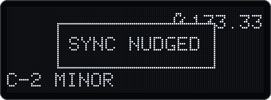
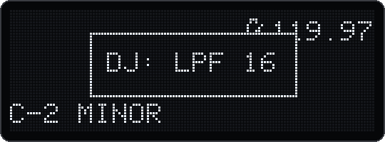
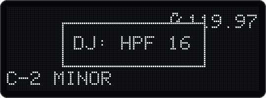
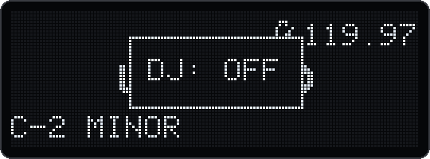
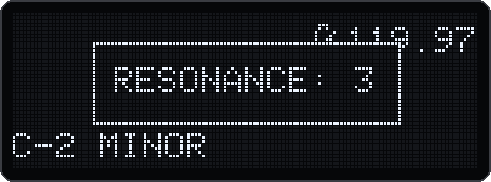

With v19.0 the Deluge plays along with a track from an external player. It hears the track's tempo and key (Scan), takes over the tempo with one press (Sync), lets you push its beat onto the track's by ear, like a jog wheel (Nudge), and gives the whole song a DJ mixer's filter on one knob (DJ filter). This manual shows how to wire it, how each function works and how they fit together in a mix.
| Function | What it does | Where |
|---|---|---|
| Scan v18.4 | Hears the tempo (BPM) and the key of what comes into the Deluge's input, with its number on the Camelot wheel. | Song view: Settings → Tuning → Scan |
| Sync v19.0 | One press sets the song's tempo to the BPM heard. Your clips then play at the track's tempo. | TAP TEMPO in the Scan view |
| Nudge v19.0 | Bends the Deluge's tempo for a moment, like a jog wheel bends a record, so that its beat lands on the track's. | While playing: hold ◀▶ pressed, turn TEMPO |
| DJ filter v19.0 | One knob for the whole song: low-pass to the left, off in the middle, high-pass to the right. | Song view, filter section: the upper gold knob |
The big picture. Beatmatching has two parts: the same tempo, and the beats at the same moment (the phase). Sync does the first with one press. The second is done by ear: start the Deluge on the track's first beat of a bar, then nudge until the kick drums land together. The DJ filter then gives you the classic moves for transitions and build-ups. The track comes from any player with a line-level output: a phone, a laptop, a CDJ or a media player.
deluge-1.2.1-mastertune-v19.0.4-l2d-92b7ebbe.bin). Settings → Firmware version shows V19.0.4-L2D. SHIFT + press SELECT opens Settings.The player comes into the Deluge and out with your song (figure 1). You hear everything from the Deluge, and the DJ filter works on the player as well.
STER., with the dot) and leave with BACK. Only the options with (monitoring) pass the input through. The same menu is in the audio clip's own menu (enter the clip, press SELECT, Audio source).The monitored input passes the audio track's own effects, then the song's effects and the DJ filter. Save the song: the track and its input are kept, so next time only the cable and the player are needed.
The Deluge is one deck of the mixer, the player another. The Deluge only listens to the player to read its tempo, so no monitoring track: you would hear the player twice. The mixer's cue lets you pre-listen to the Deluge on headphones before you bring it in, which the Deluge alone cannot do. Here the DJ filter works on the Deluge's channel only.
For the split, a Y cable at the player's output works (a line output can feed two inputs), or a second output of the player or of the mixer (booth, record or send out).
Open the Scan view (chapter 5): its sidebar (the audition column, the rightmost) shows the input's level, from −60 dB at the bottom pad to 0 dB at the top, 7.5 dB a pad. Set the player so that the loud parts light 5 to 7 green pads and the top pad, red, stays dark (it lights above about −4 dB). Too quiet (fewer than 3 pads) makes the tempo hard to read; into the red, the input clips.
Open it from Song view: SHIFT + press SELECT → Tuning → Scan: note, BPM, key (7-segment: TUNE, SCAN). The item is there only when you open Settings from Song view. Leave it with BACK, SONG or SCALE (lit while Scan is open): back to Song view. The song keeps playing meanwhile, but the pads can't launch clips in the Scan view.

The BPM big. The small line: note and Hz (none here)
The key big, with its Camelot number and the BPMThe firmware's OLED in the emulator, with 128 BPM and A minor set as the analysis would find them.
| Control | What it does |
|---|---|
| Turn SELECT | The input: Auto, Left, Right, Stereo. Auto takes both channels when a jack is plugged in (else the internal microphone). For a player use Auto or Stereo. Each change starts the analysis anew. |
| Press SELECT | What is big: note, Hz, BPM, key. For DJing the key page is handy: key, Camelot number and BPM at once. |
| Turn ◀▶ | The BPM shown doubled or halved: BPM X2, BPM X1, BPM /2. The choice stays until you change it or switch the Deluge off, also when you leave Scan and come back. |
| TAP TEMPO | Sync (chapter 6). SHIFT + TAP TEMPO: the metronome, as everywhere. |
| Gold knobs | Keep working on the song, the DJ filter included verify. |
The title names the input: SCAN LINE (a jack in the line input), SCAN MIC IN, SCAN MIC (the internal microphone), or the channel you chose. A master tune other than 440 Hz follows it, e.g. SCAN LINE 432. The 7-segment display shows the big value only: 128.0, AMIN, or ---- for nothing yet.
The pads show the tuner's needle (for tuning an instrument); they are not needed for DJing. Scan costs about 2 % of the CPU while it is open and nothing when it is closed.
In the Scan view, press TAP TEMPO. The song's tempo becomes the BPM shown, with ×2 or ÷2 applied.

Synced: the song is now at 128 BPM
No tempo heard yet: the tempo staysSYNC, or ---- when there is no tempo yet.EXT): the Deluge follows a MIDI or trigger clock, which sets the tempo. Sync changes nothing then.While the song plays, in any view, hold the horizontal encoder ◀▶ pressed and turn the TEMPO encoder. To the right the Deluge moves ahead (earlier), to the left it moves back (later). Each detent shows SYNC NUDGED (7-segment NUDGE). In Song view, pressing ◀▶ first shows the zoom level (e.g. 16TH-NOTES): that is normal.

Song view during a nudge right: the bent tempo, 133.33 for 128| Situation | Right (clockwise) | Left |
|---|---|---|
| Internal clock (the normal case) v19.0 | The Deluge moves ahead | The Deluge moves back |
| SHIFT held too, and the Deluge sends MIDI clock | 1.2.1's nudge: one MIDI and trigger clock skipped, the synced gear falls back; the Deluge stays | one clock sent extra, the gear moves ahead; the Deluge stays |
| External clock (the Deluge follows one) | As in 1.2.1: one clock tick skipped, the Deluge falls back | one tick extra, the Deluge moves ahead |
Switch it on: in Song view (AFFECT ENTIRE lit, no clip pad held) the gold knobs work on the whole song. Select the filter section with its mod button (Cutoff/Resonance, lit). Press the upper gold knob: the filter type goes round LPF → HPF → EQ → DJ → LPF. At DJ the popup shows DJ. The DJ type exists only for the song: clips and synths go round LPF, HPF and EQ as before.

20 detents left
20 detents right of the middle
The middle: the song as it was
The lower knob: the resonance| Control | In DJ |
|---|---|
| Upper gold knob, turn | Middle DJ: OFF. Left: the low-pass closes, DJ: LPF 1 to DJ: LPF 50 (closed). Right: the high-pass opens, DJ: HPF 1 to DJ: HPF 50. The numbers use the Deluge's usual 0 to 50 scale. The LEDs at the knob show the position. |
| Lower gold knob, turn | The resonance of both filters, each from where it is; the popup RESONANCE: 12 (0 to 50) shows the one of the filter that is on. |
| Upper gold knob, press | On to LPF (the filter type goes round). |
| Lower gold knob, press | Nothing in DJ. The filters' modes (12 dB, 24 dB …) are set in LPF and HPF: there the press chooses the mode. DJ uses them as set. |
The DJ knob has no filter of its own: it moves the song's own LPF and HPF cutoff, exactly as the gold knobs in LPF and HPF would. That is why it sounds like the v18 filters (no stepping, no zipper), and why saving, undo and automation recording work as for those knobs. The song saves its filter type as dj; an older firmware loads LPF there, with the same cutoffs.
The key page of the Scan view shows the track's key and Camelot number. Play your melodic parts in that key or a neighbour on the wheel (chapter 5.2): set your clips' scale and root note to it as usual on the Deluge. A one-press "song key from the key heard" is planned for v19.2.
| OLED | 7-segment | When |
|---|---|---|
| DJ | DJ | The upper gold knob pressed: the filter type DJ |
| DJ: OFF | OFF | The DJ knob in the middle: both filters off |
| DJ: LPF 1 … 50 | LP1 … LP50 | The DJ knob left of the middle: the low-pass closing |
| DJ: HPF 1 … 50 | HP1 … HP50 | The DJ knob right of the middle: the high-pass opening |
| RESONANCE: 12 | 12 | The lower gold knob in DJ |
| SCAN LINE (title) | the big value, e.g. 128.0 | The Scan view open, the input named (7-segment: the menu item is SCAN) |
| BPM X2, BPM X1, BPM /2 | the same text | ◀▶ turned in the Scan view |
| SYNC 128.0 BPM | SYNC | TAP TEMPO in the Scan view: the song at the tempo heard |
| NO TEMPO YET | ---- | TAP TEMPO before a tempo is heard; the tempo stays |
| EXTERNAL CLOCK | EXT | TAP TEMPO while an external clock sets the tempo; nothing changes |
| SYNC NUDGED | NUDGE | Each detent of a nudge |
| 16TH-NOTES (or another zoom) | — | ◀▶ pressed in Song view: the zoom level, before the nudge |
| Problem | Likely cause | What to do |
|---|---|---|
| No BPM (-- BPM) | No clear beat right now, the input too quiet, or less than 4 s since the start or since the input changed | Wait for a part with drums; check the level (chapter 3.3); for a player use Auto or Stereo |
| The BPM is half or double | The music allows both readings | Turn ◀▶ in the Scan view |
| The BPM jumps between two values | A syncopated or broken rhythm | Sync during a steady part (a four-on-the-floor section), or set the tempo by hand |
| The beats drift apart after a while | The tempo is off by a fraction, or the player's tempo moved | Round to the whole BPM (chapter 6), sync again, nudge |
| TAP TEMPO starts the metronome | SHIFT held | Press it without SHIFT, in the Scan view |
| EXTERNAL CLOCK | The Deluge follows a MIDI or trigger clock | Sync the clock's source, or stop the external clock |
| The nudge does nothing | The song isn't playing, or ◀▶ isn't held pressed | Start the song; hold ◀▶ down while turning TEMPO |
| The nudge feels weak | A single detent is only 10 ms | Keep turning: about 40 ms per second |
| Scan is missing in Tuning | Settings was opened from a clip | Go to Song view first |
| I don't hear the player | No monitoring: the audio track's input without (monitoring), or its volume down | Chapter 3.1, step 3 |
| I hear the player twice | Setup B with a monitoring track as well | Set the audio track's source to one without monitoring, or delete the track |
| Everything is mono | Only the speaker or the left output plugged in | Headphones or the right line output as well |
| No DJ after EQ | You are in a clip: DJ is for the song only | Song view, no clip pad held |
| The filter whistles | Too much resonance | Lower gold knob to the left |
| The DJ knob starts somewhere unexpected | LPF and HPF were set apart before | Expected: it goes on from there without a jump (chapter 8.1) |
| An older firmware shows LPF | It doesn't know the DJ type | Expected; the cutoffs are the same |
Planned (research/DJ-TOOL-PLAN.md): v19.1 the Deluge's own tracks as decks: a computer tool writes each track's tempo into its file, and audio clips then play whole tracks in sync, bar-exact. v19.2 a crossfader and an isolator EQ (kills for bass, mids and treble) on the Deluge's own controls, and the song's key set from the key heard.
| Action | Controls | Where, and what you see |
|---|---|---|
| Open Settings | SHIFT + press SELECT | Any view |
| Open Scan | Settings → Tuning → Scan: note, BPM, key | From Song view; SCAN LINE |
| Leave Scan | BACK, SONG or SCALE | Back to Song view |
| Scan: input | Turn SELECT | Auto, Left, Right, Stereo |
| Scan: what is big | Press SELECT | Note, Hz, BPM, key |
| Scan: ×2 / ÷2 | Turn ◀▶ | BPM X2, BPM X1, BPM /2 |
| Sync | TAP TEMPO | In the Scan view; SYNC 128.0 BPM |
| Undo / redo the sync | BACK / SHIFT + BACK | In Song view |
| Metronome | SHIFT + TAP TEMPO | Anywhere |
| Nudge ahead / back | Hold ◀▶ pressed, turn TEMPO right / left | While playing, any view; SYNC NUDGED; about 10 ms a detent, 40 ms per second of turning |
| Nudge only the clock outputs | SHIFT + hold ◀▶ + turn TEMPO | As 1.2.1 did, when the Deluge sends MIDI clock |
| Tempo to a whole BPM | Turn TEMPO a detent right, then left | Song view (Fine tempo knob on) |
| DJ filter on | Filter section; press the upper gold knob until DJ | Song view: LPF → HPF → EQ → DJ |
| DJ filter | Turn the upper gold knob | Left DJ: LPF 1…50, middle DJ: OFF, right DJ: HPF 1…50 |
| Resonance | Turn the lower gold knob | RESONANCE: 0…50; keep it low at first |
| Filter modes | In LPF or HPF: press the lower gold knob | 12 dB, 24 dB …; DJ uses them |
| Delete filter automation | In LPF or HPF: SHIFT + press the upper gold knob | AUTOMATION DELETED |
| Audio track for the input | Hold a new clip's pad in an empty row + press SELECT | Song view |
| Its input, with monitoring | Hold LEARN + press the audio clip's pad | STEREO INPUT (MONITORING) |
DJ with the Deluge · firmware 1.2.1-mastertune v19.0 and newer · the repository's README.md (section v19.0) has the technical details and the tests.